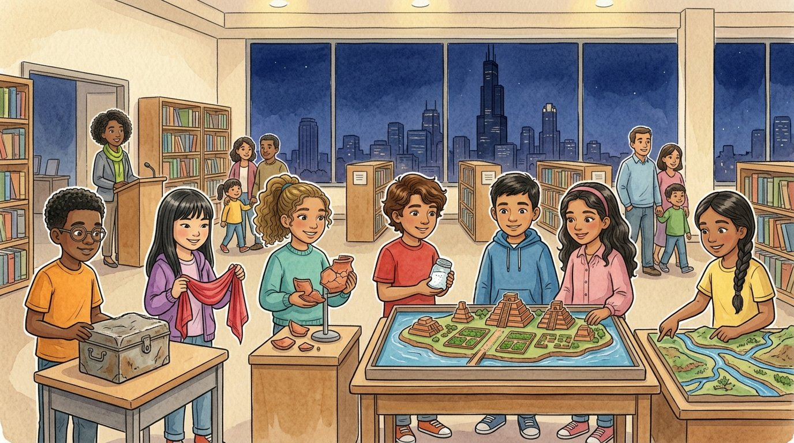

Grade 6 · Social studies · SS.6-8.H · SS.6-8.G · SS.6-8.CV · SS.6-8.EC
The museum of us
A story about a class museum where each student explains one big idea from the year.
El museo de nosotros. Un cuento sobre un museo de la clase en el que cada estudiante explica una gran idea del año.
Key words you will learn
Tap a green word to see what it means.
Toca una palabra verde para ver qué significa. Con la ayuda activada, verás también la definición en español.
The story
El cuento está en inglés. Pulsa «Listen to the story» para escucharlo y toca las palabras verdes cuando no entiendas una.
On the last Thursday of May, the school library turned into a museum. Each student had built an about one big idea from sixth grade social studies. "Your job is to teach our visitors," said Ms. Haddad, "and to make a between the past and today."
Daniel stood by the old metal box from the time capsule. "This is ," he told a group of parents. "A letter from 1976 is a primary source, because the writer was there. A history book written later is a secondary source. Historians compare many sources, because each person sees things from a different perspective."
Salma had built two clay rivers with tiny canals. "This is ," she explained. "In Mesopotamia, people settled near rivers because there was very little rain. They dug irrigation canals, grew a surplus of food and built some of the first cities. But the irrigation left salt in the soil." A little girl touched the canals. "Like a water slide for plants," she said.
Athena held up her pottery pieces. "This is . In Athens, citizens voted on laws themselves, and they could even vote to send away someone too powerful. But only some men could vote." "Today, in the United States, all adult citizens can vote, and we elect representatives. And like the Romans with their Twelve Tables, we write our laws down, so everyone can know their rights."
Sophia waved her silk scarf, and Elías shook his jar of salt. "This is trade," said Sophia. "Silk, paper and ideas traveled along the Silk Road." "And in Mali, gold was traded for salt across the Sahara," said Elías. "Each place traded what it had for what it lacked." A grandfather laughed. "I'd still choose the gold." "Everyone says that," said Elías.
Next to them, a sign said , with a picture of pumpkins and prices. "When demand goes up and supply stays the same, prices go up," Elías explained to a visitor. "After Halloween, demand drops, and pumpkins are almost free." The visitor nodded. "That explains my cousin's pumpkin farm."
Israel and Selena had their lake city floating on a tray. "The Mexica adapted to a lake and built chinampas," said Selena. "And today, Mexico City is sinking," said Israel, "because water is pumped from under the old lake. Be careful: two things happening together isn't always a cause." Next to them, a chart of rights and responsibilities hung on the wall, with a card for Mr. Herrera that said Welcome to the club.
At the end of the night, Ms. Haddad gathered the class. "So what did you learn this year?" Daniel thought for a moment. "That the past isn't over," he said. "We still use Roman ideas, Chinese inventions and Greek words. And somebody, someday, will open our time capsule and study us." Athena smiled. "Then we'd better be interesting."
Pause to connect
Visual arts · VA:Cn11.1.6
Look back at the art you met this year: the Standard of Ur, the blue hippo from Egypt, the coin from Athens, the Pont du Gard, the Tang camel, the Diamond Sutra, the Catalan Atlas, the Codex Mendoza, The Harvesters and the Statue of Liberty.
Repasa el arte que conociste este año: el Estandarte de Ur, el hipopótamo azul de Egipto, la moneda de Atenas, el Pont du Gard, el camello Tang, el Sutra del Diamante, el Atlas Catalán, el Códice Mendoza, Los segadores y la Estatua de la Libertad.
- Which work of art taught you the most about the people who made it? What did it show about their time, their beliefs or their resources?¿Qué obra de arte te enseñó más sobre las personas que la hicieron? ¿Qué mostraba sobre su época, sus creencias o sus recursos?
- If an artist made one work today to show our time to people in the future, what should it show? Explain why.Si un artista hiciera hoy una obra para mostrar nuestra época a la gente del futuro, ¿qué debería mostrar? Explica por qué.
Think about it, then answer in your notebook or talk it over with someone at home.
Check your thinking
Any choice works if you connect the art to its time. For example, the Standard of Ur shows a surplus of food and trade with faraway places, the Catalan Atlas shows how far news about Mali traveled, and The Harvesters shows the work of a whole village at harvest time. A work about today might show phones and screens, city neighborhoods, families from many places or people caring for the environment. Art reflects the times, traditions and resources of the people who make it.
Glossary
- history
- The study of the past, based on evidence.
- historia: El estudio del pasado, basado en evidencia.
- geography
- The study of places, the environment and how people interact with them.
- geografía: El estudio de los lugares, el medio ambiente y cómo la gente se relaciona con ellos.
- government
- The people and rules that run a community, a city or a country.
- gobierno: Las personas y las reglas que dirigen una comunidad, una ciudad o un país.
- economics
- The study of how people make, buy, sell and use goods and services.
- economía: El estudio de cómo la gente produce, compra, vende y usa productos y servicios.
- exhibit
- A display of objects and information that people can visit and learn from.
- exhibición: Una muestra de objetos e información que la gente puede visitar para aprender.
- connection
- A way two ideas, events or places are related.
- conexión: Una forma en que dos ideas, sucesos o lugares están relacionados.
Questions
Choose the correct answer. If you make a mistake, the story shows you where the answer is.
Elige la respuesta correcta. Si te equivocas, el cuento te muestra dónde está la respuesta.
-
Question A. What was the students' job at the museum?
¿Cuál era el trabajo de los estudiantes en el museo?
Ms. Haddad said their job was to teach the visitors and make a connection between the past and today.
-
Question B. Why do historians compare many sources, according to Daniel?
Según Daniel, ¿por qué los historiadores comparan muchas fuentes?
Historians compare many sources because each person sees things from a different perspective.
-
Question C. What did Salma's exhibit explain about Mesopotamia?
¿Qué explicaba la exhibición de Salma sobre Mesopotamia?
People settled near the rivers, dug irrigation canals, grew a surplus of food and built some of the first cities.
-
Question D. What ideas did Athens and Rome give to the United States?
¿Qué ideas le dieron Atenas y Roma a Estados Unidos?
From Athens came citizens voting, and from Rome came writing laws down so everyone can know their rights.
-
Question E. What happens to prices when demand goes up and supply stays the same?
¿Qué pasa con los precios cuando la demanda sube y la oferta sigue igual?
When demand goes up and supply stays the same, prices go up.
Challenge: explain your thinking
Make a connection
Choose two exhibits from the museum and explain a connection between them. For example, how are the Silk Road and supply and demand connected, or Mesopotamia and Tenochtitlan? Use evidence from two stories.
Haz una conexión. Elige dos exhibiciones del museo y explica una conexión entre ellas. Por ejemplo, ¿cómo se conectan la Ruta de la Seda y la oferta y la demanda, o Mesopotamia y Tenochtitlan? Usa evidencia de dos cuentos.
Answer in your notebook or talk it over with a classmate. Use evidence from the story.
Responde en tu cuaderno o coméntalo con un compañero. Usa evidencia del cuento.
Check your thinking
Example: Mesopotamia and Tenochtitlan both show people adapting to water. In Mesopotamia, farmers dug canals to bring water to dry land, and in Tenochtitlan, the Mexica built chinampas in a lake. In both places, these changes helped grow food and cities, but they also caused problems later: salty soil and a sinking city. Another example: silk was scarce in the West, so its price went up at each city on the Silk Road, which is supply and demand.
Go further
Daniel said that someday someone will study us. Imagine a historian in 2125 studying your sixth grade year. Which three sources would help them most, and what might they misunderstand about your life?
Para ir más lejos. Daniel dijo que algún día alguien nos estudiará. Imagina a un historiador en 2125 que estudia tu año de sexto grado. ¿Qué tres fuentes le ayudarían más y qué podría entender mal de tu vida?
Check your thinking
Helpful sources could be a class photo, a student's journal and a school newsletter. A historian might misunderstand things if they saw only one source: a photo of a party could make it seem like every day was a party, and a news story about one problem could make it seem like the whole year was bad. That's why they would need many sources and many perspectives, just like we did.